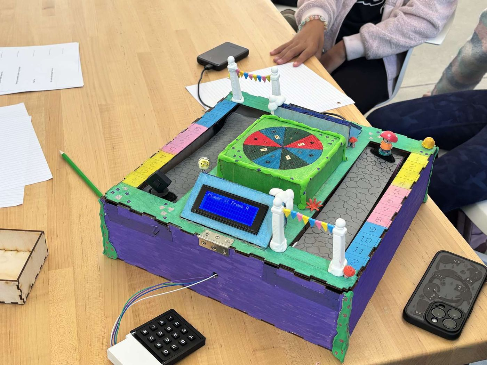

7 CAD iterationsCornerstone of Engineering 2 · Spring 2026 · Team of 5
Fraction Frenzy
A 14″ × 14″ × 4″ conveyor-belt board game for 5th-grade fraction practice. As CAD lead, I designed the drivetrain and took it through 7 SolidWorks iterations, cutting belt drift by 5 mm.
- belt drift
- −5 mm
- belt drift
- shaft clearance
- 0.03″
- shaft clearance
- from 15 users
- 8/10
- from 15 users
- SolidWorks
- Drawing package
- 3D printing
- DC drive